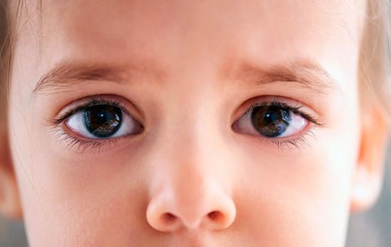
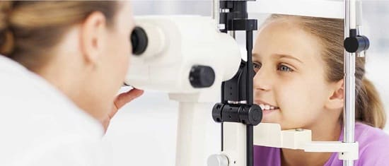

Зрачок — это темное круглое отверстие в середине цветной радужки. Зрачки регулируют количество света, который проникает в глаз. Как правило, они становятся больше в темноте и меньше — при ярком освещении. Обычно оба зрачка имеют одинаковый размер. Но примерно у 20% детей зрачки иногда могут быть неодинаковыми. Это явление называется физиологическая анизокория,что просто означает нормальные, но неодинаковые зрачки. У большинства детей это просто безобидная особенность, подобно неодинаковым рукам или ногам.
ЧТО ДЕЛАТЬ
• Расскажите о своих наблюдениях врачу своего ребенка во время следующего планового визита.
• Принесите фотографии, на которых видна очевидная разница в размере зрачков.
• Ваш врач проведет тщательный осмотр с ног до головы, уделив особенное внимание глазам ребенка.
• Если нет признаков, вызывающих беспокойство, как, например, опустившееся веко, необычные движения глаза или неврологические проблемы, ваш врач убедит вас, что это просто нормальная особенность и что будут дни, когда зрачки будут отличаться сильнее, и дни, когда они будут практически одинаковыми.
Если ваш врач подозревает, что в основе этого явления лежит какая-то проблема с глазами, следующим шагом будет направление ребенка на осмотр к детскому офтальмологу. К счастью, неодинаковые зрачки, как правило, оказываются безобидной особенностью.

Здоровье ребенка от докторов Сирс / Сирс У. и др.